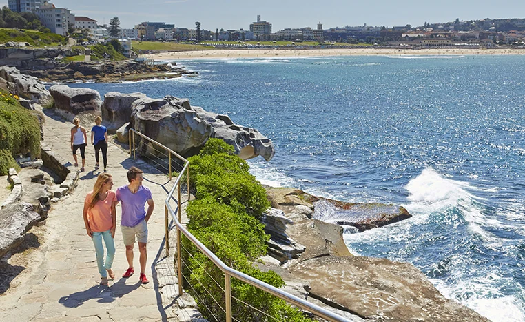
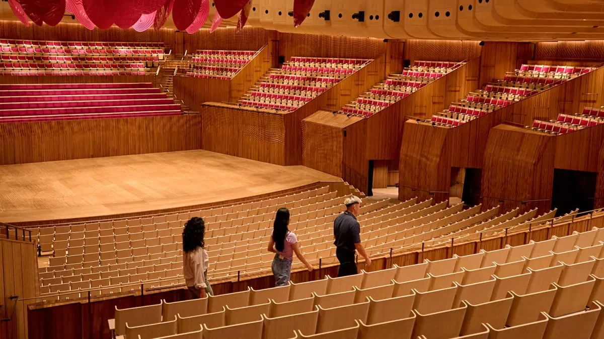
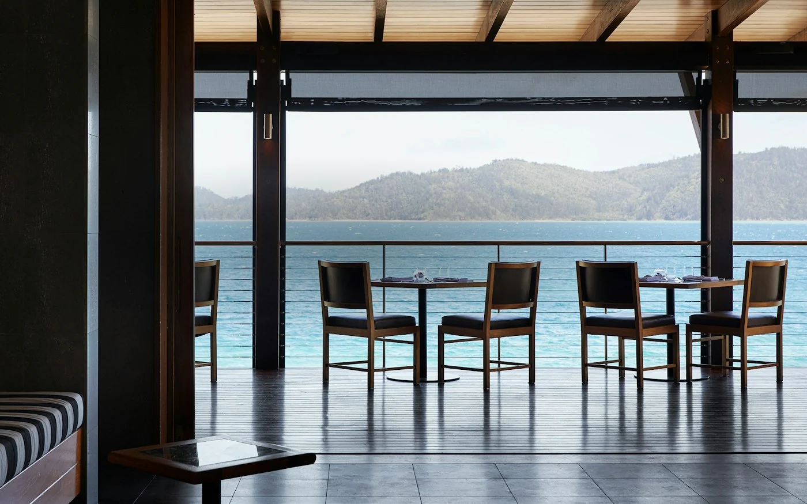
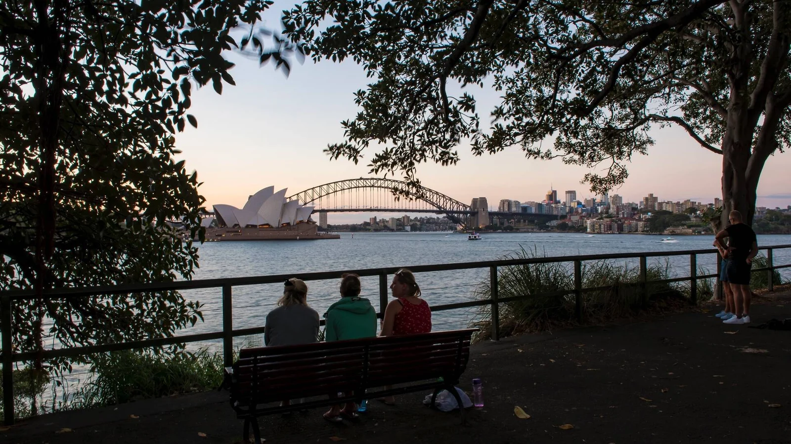
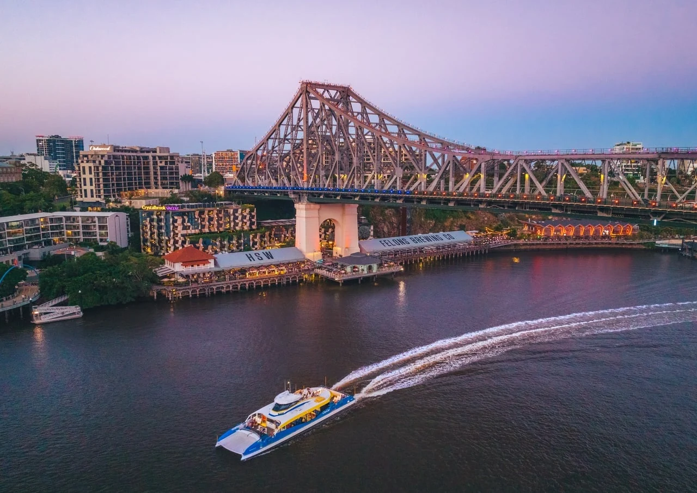

11월 15일
사진 더 보기아시아나 비즈니스석 · 운항 기종 확인 필요일요일
인천 출발
날짜 링크아시아나 인천–시드니 직항 비즈니스석을 이용하는 계획입니다. 아래 시각은 검토용 예시이며, 실제 운항편·출발 시각·기종은 발권 전에 확인합니다.
- 17:00인천공항 · 출발 약 3시간 전 도착
- 20:00시드니행 출발 예정 · OZ601비행 약 10시간 20분 · 날짜와 도착 시각은 현지 기준
숙박기내
/Dine/Pebble-Beach/qualia-resort-Pebble-Beach-pool-sunlounges.jpg?w=1600&fit=crop)
11월 15일 출발해 21일 귀국하는 5박 계획입니다. 시드니 2박, 해밀턴 아일랜드 2박, 브리즈번 1박으로 이동합니다. 도시를 되돌아오지는 않지만 국내선 두 번과 호텔 이동 두 번이 있습니다.
시드니의 오페라하우스와 하버브리지, 휘트선데이 제도의 리조트 휴식, 브리즈번에서의 마지막 저녁을 담았습니다. 기본안은 NSW와 덴트섬 골프 두 번이며, 화이트헤이븐을 우선하면 덴트섬 골프를 힐인렛 투어로 바꿉니다. 외해 산호초 투어는 포함하지 않습니다.
이동이 많은 편이지만 정해진 날짜 안에 도시와 섬을 함께 보고 싶은 분께 맞습니다. 골프·투어와 항공을 각각 예약하기 전에 서로의 시각을 먼저 맞춰야 합니다.
사진 더 보기아시아나 인천–시드니 직항 비즈니스석을 이용하는 계획입니다. 아래 시각은 검토용 예시이며, 실제 운항편·출발 시각·기종은 발권 전에 확인합니다.

 Coogee Pavilion 점심 예정
Coogee Pavilion 점심 예정 38° 배스하우스 · 오전 산책 대체 선택
38° 배스하우스 · 오전 산책 대체 선택
오페라하우스 한국어 투어 · 약 30분아침 도착 후 입국·수하물 수령과 시내 이동에 여유를 두고 Capella에 짐을 맡깁니다. 첫날은 본다이–브론테 약 2–2.5km만 걷고, 쿠지까지는 차량으로 이동해 점심을 먹습니다. 계단과 경사가 있는 해안길이므로 피곤하거나 도착이 늦으면 산책을 줄입니다.
오페라하우스 한국어 투어는 약 30분입니다. 15:45 회차를 예약하는 안으로, 15분 먼저 도착합니다. 투어 전 객실 준비가 안 됐다면 짐만 보관하고 투어 뒤 체크인합니다. 저녁은 Bennelong 예약을 추진합니다.
38° 배스하우스를 원하면 오전 해안 산책과 쿠지 점심을 대신해 본다이에서 90분 세션과 점심을 잡습니다. 두 활동을 모두 넣지는 않습니다.


 패딩턴 · 여유가 있을 때
패딩턴 · 여유가 있을 때 Spezia · 클라임 전 이른 저녁
Spezia · 클라임 전 이른 저녁 Summit Insider Twilight · 회차 예약 필요
Summit Insider Twilight · 회차 예약 필요오전에는 NSW Golf Club 18홀을 희망합니다. 비회원 승인과 오전 티타임이 확보되어야 성립하는 일정입니다. 점심 뒤 패딩턴을 짧게 둘러보고, 호텔에서 충분히 쉽니다. 골프가 늦어지면 쇼핑을 생략합니다.
17시 The Lands의 Spezia에서 이른 저녁을 먹은 뒤 BridgeClimb으로 이동합니다. 사다리가 없는 Summit Insider Twilight를 희망하며 약 2시간 40분과 앞뒤 준비 시간을 잡습니다. 실제 출발 회차가 이 배치와 맞지 않으면 Spezia를 점심으로 바꾸거나 클라임 회차를 조정합니다.
/catseye-beach-landscape.jpg?w=1600&fit=crop) 해밀턴 아일랜드 풍경 · 국내선 이동 구간 참고
해밀턴 아일랜드 풍경 · 국내선 이동 구간 참고/Stay/Leeward/qualia-resort-Leeward-Pavilion-Whitsunday-views.jpg?w=1600&fit=crop) Leeward Pavilion · 객실 예약 예정
Leeward Pavilion · 객실 예약 예정/spa/spa-qualia/qualia-resort-spa-qualia-day-spa-entry.jpg?w=1600&fit=crop) Spa qualia · 항공 도착 후 선택 체험
Spa qualia · 항공 도착 후 선택 체험전날 늦은 귀가를 고려해 새벽 일출 일정은 뺐습니다. 조식 뒤 공항으로 이동해 해밀턴 아일랜드행 직항을 이용하는 계획입니다. 시드니는 해밀턴 아일랜드보다 1시간 빠릅니다. 11시 출발·비행 2시간 30분이면 현지 12시 30분 도착으로 계산합니다. 실제 운항편은 발권 전 확인합니다.
공항 픽업과 체크인 절차를 거쳐 qualia에 도착합니다. 점심은 운영 시간이 맞으면 Pebble Beach에서, 오후에는 객실에서 쉬거나 Spa qualia의 90분 커플 트리트먼트를 선택합니다. 비행이 지연되면 스파를 생략하거나 다른 시간으로 변경합니다. Long Pavilion 저녁을 예약하는 안입니다.

/dine/long-pavilion/qualia-resort-long-pavilion-entrance-sea-views.jpg?w=1600&fit=crop)

 대체안 · 힐인렛과 화이트헤이븐
대체안 · 힐인렛과 화이트헤이븐 On the Edge · 약 90분 선택 항해
On the Edge · 약 90분 선택 항해 coca chu 저녁 예정
coca chu 저녁 예정기본안은 Hamilton Island Golf Club 18홀입니다. 아침 페리로 덴트섬에 건너가 라운드와 점심을 즐기고 오후에 리조트로 돌아옵니다. 골프와 힐인렛 투어를 연달아 예약하지 않습니다.
화이트헤이븐을 우선하면 골프 대신 Explore Hill Inlet 약 4시간 투어를 선택합니다. 08:00 또는 12:30 중 조수에 따라 하루 한 회차만 운영될 수 있어 날짜별 출항을 확인해야 합니다. 보트 이동과 전망대까지의 걷기, 해변 시간이 포함되며 외해 산호초 스노클링 투어는 아닙니다.
기본 골프안에서는 오후 휴식 뒤 On the Edge 약 90분 선셋 세일을 선택할 수 있습니다. 힐인렛 오후 회차를 탔다면 선셋 세일은 생략합니다. 저녁은 coca chu 예약을 추진합니다.
 출발 전 리조트 주변 산책제임스 스트리트 · 자유시간
출발 전 리조트 주변 산책제임스 스트리트 · 자유시간 Exhibition · 예약 시간에 맞춘 저녁
Exhibition · 예약 시간에 맞춘 저녁아침은 조식과 리조트 주변의 짧은 산책으로 여유 있게 보냅니다. 패시지 피크 일출 등반은 넣지 않고, 체크아웃 후 브리즈번행 국내선을 이용합니다. 항공편은 예시 시각이며 실제 운항에 따라 공항 픽업을 확정합니다.
The Calile에 체크인하고 제임스 스트리트를 둘러보거나 호텔에서 쉽니다. Exhibition은 확보된 좌석과 시작 시각에 맞춰 저녁 일정을 잡습니다. 스토리브리지 클라임을 원하면 식사와 이동·준비 시간을 충분히 띄울 수 있을 때만 넣고, 두 예약이 겹치면 하나를 선택합니다.
 The Calile 출발
The Calile 출발 대한항공 KE408 출발 · 프레스티지
대한항공 KE408 출발 · 프레스티지08:40 출발편을 기준으로 국제선 공항에 약 3시간 먼저 도착하도록 05시 10분경 호텔을 나섭니다. 실제 발권 시각과 픽업 소요 시간을 확인해 조정합니다. 인천에는 같은 날 저녁 도착하는 계획입니다.
사진 더 보기사진 더 보기사진 더 보기사진 더 보기사진 더 보기사진 더 보기사진 더 보기
사진 더 보기사진 더 보기사진 더 보기사진 더 보기사진 더 보기사진 더 보기사진 더 보기사진 더 보기사진 더 보기| 국제선 항공 · 비즈니스 예상 | A$9,700 | ₩9,894,000 |
| 인천→시드니 + 브리즈번→인천 · 2인 예산, 실제 운임·편명 확인 | ||
| 국내선 항공 · 2구간, 2인 | A$1,600 | ₩1,632,000 |
| 시드니→해밀턴, 해밀턴→브리즈번. 위탁수하물·골프백 규정과 추가 요금 확인 | ||
| 숙박 5박 | A$7,550 | ₩7,701,000 |
| Capella A$1,300 × 2박 + qualia A$2,000 × 2박 + The Calile A$950 × 1박 | ||
| 골프 2라운드 · 기본안, 2인 | A$1,450 | ₩1,479,000 |
| NSW + 덴트섬 18홀 예상 배정액. 힐인렛 선택 시 덴트섬 비용을 빼고 투어 견적으로 교체 | ||
| 체험 예산 | A$3,000 | ₩3,060,000 |
| 한국어 투어·BridgeClimb·스파·선셋 세일 및 선택 변경용 배정액. 힐인렛·스토리브리지를 모두 추가한 확정 금액은 아님 | ||
| 식사 예산 | A$2,600 | ₩2,652,000 |
| 저녁 5회 · 점심 · 음료 예상. 예약 요금제의 포함 식사 확인 | ||
| 현지 이동 예산 | A$1,500 | ₩1,530,000 |
| 시드니·브리즈번 공항 및 관광 차량, 섬 이동 예상. 리조트 포함 픽업·버기·골프 페리는 중복 청구 여부 확인 | ||
| ETA·여행자보험·예비비 | A$990 | ₩1,009,800 |
| ETA 신청 수수료·보험 및 변동 비용 예상 | ||
| 합계 · 두 분 | A$28,390 | ₩28,957,800 |
2026년 10월 19일 검토한 여행 제안입니다. 예약 완료를 확인하는 자료가 없으므로 항공편, 객실, 티타임, 레스토랑과 투어는 모두 예약 전 확인이 필요합니다. 적힌 시각은 예약된 일정표가 아니라 동선을 검토하기 위한 제안 시각입니다.
모든 시각은 해당 지역의 현지 시각입니다. 11월에는 시드니·멜버른이 한국보다 2시간, 퀸즐랜드가 1시간 빠릅니다. 주를 이동할 때는 현지 출발·도착 시각과 실제 비행시간을 구분해 주세요. 차량 이동시간은 교통 상황에 따른 예상치이며 수하물 수취·픽업 대기·주차 시간은 별도입니다.
시드니 2박과 섬 2박, 브리즈번 1박을 연결하는 안입니다. 섬에서는 골프와 힐인렛 중 우선순위를 정하고, 국내선 이동일에는 여유를 남겨 5박을 보냅니다.

사진 더 보기